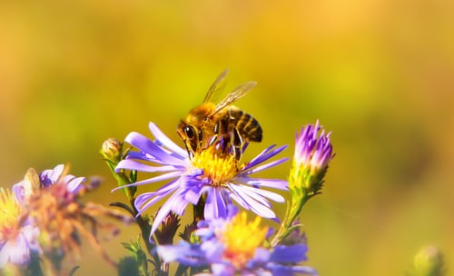

The Biological Big Bang: an overview of semelparity in Arthropods
September 20, 2021 5:30pm ISTSemelparity and iteroparity are the two extremes of a continuum of the possible modes of reproduction. Semelparity, coined by evolutionary biologist Lamont Cole, refers to the reproductive strategy that limits the organism to a single reproductive cycle and invests all of its resources in a single group of offspring, also called the big bang reproduction, since semelparous species often produce a large number of offspring [1]. It is usually favored when the probability of survival of the juvenile is greater than that of the adult [2]. This reproductive strategy is in accordance with the R-selected strategy. Also, in semelparous species alone, the parity may change according to the different conditions that are available[4]. Some semelparous species die instantly after giving birth or laying eggs (e.g. Salmon,), maybe a single parent or both, but this is not the only criterion for the semelparous classification
A large variety of arthropod species are considered to be Semelparous, including many from the order lepidopterans. As they metamorphose into adults, they collect resources for their first and final reproductive episode, since several (but not all) die shortly after laying eggs. Insects (and a few other arthropods) can also be classified as semelparous and iteroparous based on the temporal pattern of egg maturation and deposition. The insects that lay all of their eggs at a single place are semelparous, and those that lay eggs at different places do so to avoid unpredictable situations are considered iteroparous [2]. According to this, not all insects that reproduce once can be considered semelparous as they may not deposit all of their eggs at once (e.g. nymphalids, pierids, and acraeids). This pattern of egg deposition may be related to colors and patterns of the larval stage, as it may or may not allow the butterfly to lay eggs singly.[7].
An excellent example of semelparity of R-selected species would be the Mayfly nymphs which live for about a year in shallow water, going through 50 molts in the meantime before they turn into Imago, which refers to the adult stage at which they mate. At the adult stage, Mayflies can not feed; they do not have a mouth to do so since they have collected all the resources for reproduction in the long nymph stage and invest it all to reproduce and live for only a few days.
Long-term stability of habitats, which creates safe and predictable breeding grounds, must be the cause for many insects adapting to the semelparous strategy. The abundance of their host plants and annual cycles of seasons regulate the nutrition availability in plants, creating a situation that allows the insects to reproduce once at a time where the probability of survival of their offspring would be the most [2]. This stable environment existing over an extended period gives the semelparous insects a considerable advantage over others; they could maximize their effort and spend energy in increasing the number of offspring and develop features that would keep their eggs safer, with the cost of no following reproductive episodes.
This also created a way for the evolution of parental care in some semelparous insects; in which, the species which do not die instantly after laying eggs can protect their eggs. This behavior should be more prevalent in semelparous species than in iteroparous species, as the benefit of the protection of a clutch may be far lower than the cost of delaying/losing the reproduction of the next clutch in iteroparous species eg. Parent Bug ( Elasmucha grisea ) [3].
Many insect species like lepidopterans, Dipterans, Coleopterans have co-evolved with their host plants. In an evolutionary arms race, they have overcome the defense mechanisms of plants, allowing them a safe place for laying eggs and feeding habitat for their larvae/pupae. Similarly, many have evolved to lay their eggs on other animals, acting as parasites.
Along with all the benefits, semelparity comes with some shortcomings, semelparous insects rely on the abundance and stability of their host plant (or another animal) species, so any disturbance to either of them would cause drastic adverse effects on the population of growth of these insects.
Continuous deforestation and habitat fragmentation during the last century has endangered the existence of many flora and fauna, but the rate of decline of insect populations may be greater than that of plants and vertebrates [5]. In these circumstances, semelparous insects which are dependent on a few plant species or other animals are in grave danger of becoming extinct. Only 20% of Insect species are estimated to have been identified and described until now [6], so if many species become extinct, we won’t even know they were there.
References:
Author :
Dev Bagdi
BS-MS StudentIISER TirupatiRelated Articles
Camouflage: A strategy for survival
November 12, 2020 6:45pm IST
If we look into the Oxford dictionary for the meaning of camouflage we will get: “the way in which an animal’s colour or shape matches what is around or near it and makes it difficult to see”. They use it as a defensive mechanism as well as an offensive mechanism.

Cancer And Its Prevelence in Arthopods
November 12, 2020 4:55pm IST
Cancer is one of the most dreaded diseases in humans. But are there any pieces of evidence of cancerous growths in arthropods? Do the most diverse group of creatures on earth suffer from tumorous growths too? Let’s find out.

Apis mellifera- An astounding and venomous creature!
November 12, 2020 4:47pm IST
lethal and toxic bee venom of Apis mellifera is thus known as Apitoxin. But what causes such deadly symptoms? The main components of Apitoxin are ... Read more!
